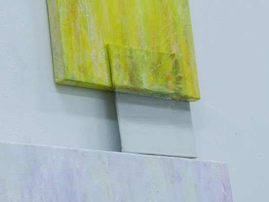
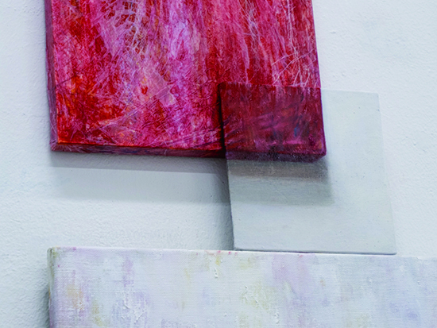
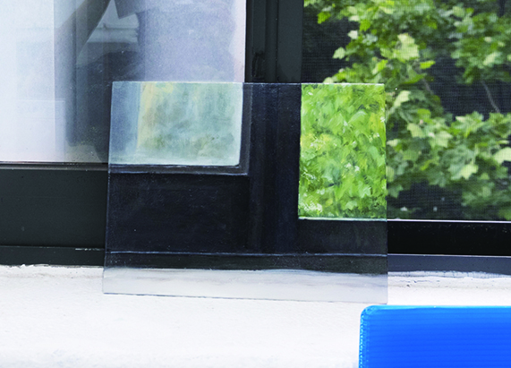
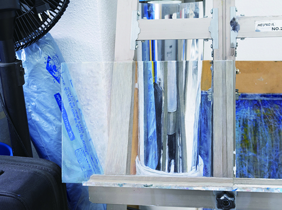
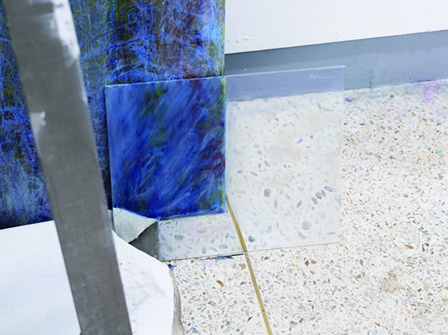

이것은 현실인가
2023.06
Oil on canvas
15x15 / 22x27cm





사실적으로 그려진 그림은 나의 현실 공간과 그림의 공간이
하나로 연결되며, 점차 생각 속에 잠기는 상태로 이끌어 준다.
이 과정은 현실과 그림의 공간에 대해 다시 생각해 보게 만드는 계기가 됐다.
작품은 각각의 조각들로 구성되어 있으며, 두 가지 의미로 나뉠 수 있다.
첫 번째는 표면적으로 드러나는 시각에 관한 이야기이다.
각 조각들은 나의 공간과 시점을 표현하며, 내가 경험하는 현장을 공유할 수 있는 매개체가 된다.
두 번째 의미는 사실적인 그림에 대한 고찰이다.
공간의 일부를 사실적으로 표현함으로써, 현실과 일치할 수 있는 가능성을 지니고 있다.
그렇다면 이 그림의 공간을 현실이라 볼 수 있는지에 대한 의문을 남기게 된다.